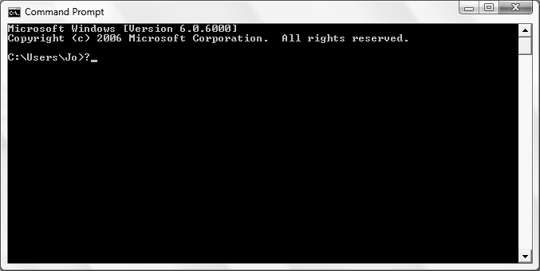
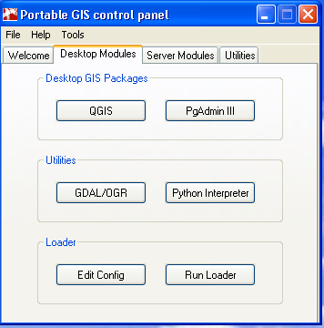
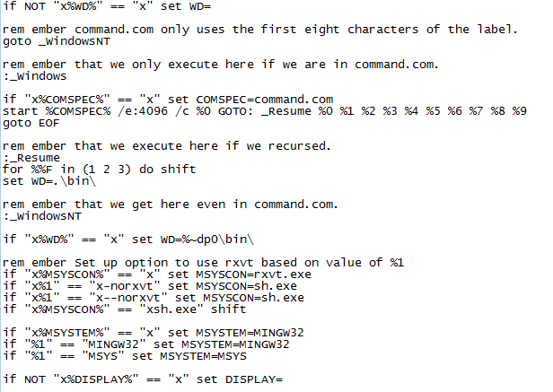
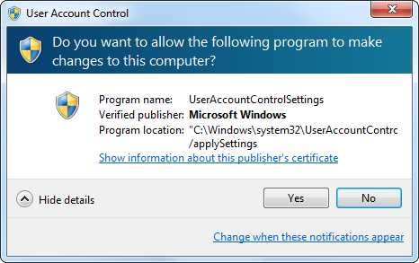
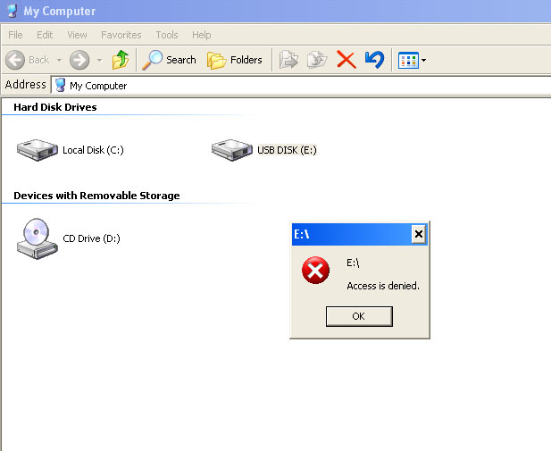
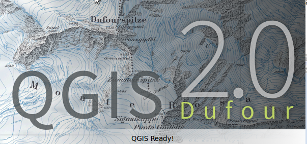
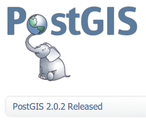

Jo Cook
Astun Technology
@archaeogeek
Portable GIS
What?
A pet project
Conceived in 2007
To "bring open source to the masses"
Why?
RTFM j00 N00b!!!*
*Please read the manual (sir)
Hard to install and use

Proprietary Packages lock you in
Powered by:
PostGIS/PostgreSQL
QuantumGIS
Grass
Python
OGR/GDAL
Apache
Mapserver
Loader
Control all the things!

(Exit to demo)
(...)
How's it done?
Many batch files...

A hokey GUI scripting language
So what Sucks about Portable GIS?


Not having enough time to work on it
Not putting it in a repository
What's Next?


This talk was brought to you with help from:
BigPresentation software for messy hackers
From Tom MacWright
Thanks :-)
@archaeogeek